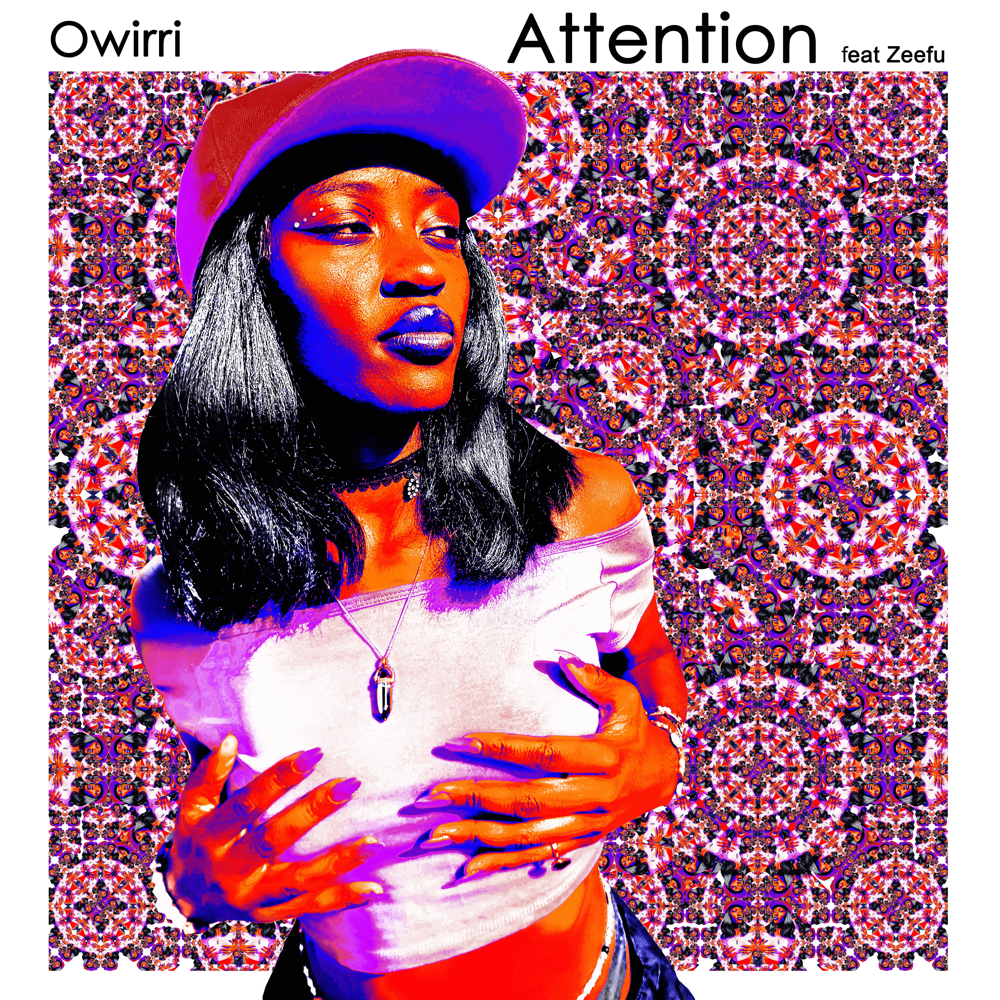

LATEST RELEASEOUT 28 AUGUST 2026
Attention ft Zeefu
A vibrant collision of desire, confidence and magnetic energy. Owirri and Zeefu step into a vivid sonic exchange made to be felt loudly.
ATTENTION ARRIVES IN
00
Days
00
Hours
00
Minutes
00
Seconds